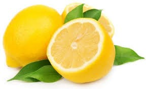
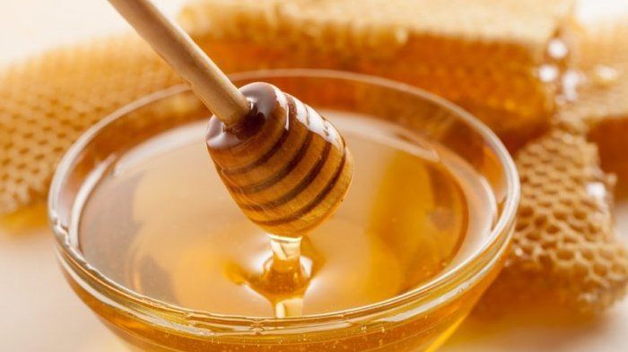

.png) TIPS DAN TRIK PERAWATAN WAJAH
TIPS DAN TRIK PERAWATAN WAJAH.png)
CARA MENCERAHKAN KULIT WAJAH SECARA ALAMI
1. Gunakan Lemon dan Madu
 
Lemon dan madu bisa mencerahkan kulit wajah karena kandungan vitamin C yang kaya di dalam lemon dan juga kandungan antibakteri yang ada pada madu. Selain itu, lemon dan madu juga bisa mencegah kulit dari jerawat dan komedo. Cara membuat masker ini sangatlah mudah. Cukup campur satu sendok teh madu dengan buah lemon yang sudah diperas, kemudian oleskan pada muka dan diamkan selama 15 menit.
2. Lidah Buaya
Selain madu dan lemon, cara lain untuk mencerahkan wajah dengan alami adalah dengan menggunakan lidah buaya. Lidah buaya mengandung senyawa polifenol. Senyawa polifenol ini berfungsi sebagai antioksidan agar kulit terhindar dari warna kusam dan muram.
3. Putih Telur
Yes, putih telur! Selain bisa dimakan, putih telur juga bisa digunakan untuk mencerahkan kulit wajah. Karena putih telur mengandung protein, maka protein tersebut bisa bermanfaat bagi kulit kita. Protein yang terkandung dalam putih telur tersebut bisa memacu pertumbuhan sel-sel baru dan membuat sel tersebut menggantikan kulit kusammu dengan sel kulit baru! Caranya mudah, ambil bagian putih telur yang mentah lalu oleskan pada muka. Kemudian, diamkan selama kurang lebih 15 menit hingga kering. Selain kulit wajah menjadi lebih cerah, putih telur juga membuat wajah jadi lebih kencang.
4. Pepaya
Selain baik untuk pencernaan, pepaya juga baik untuk kulit wajah. Pepaya bisa melawan bakteri pada wajah dan mencerahkan kulit musam. Cara menggunakan buah pepaya ini sangatlah mudah. Cukup lumatkan pepaya pada mangkuk, kemudian aplikasikan seluruhnya kepada wajah. Bilas setelah didiamkan pada muka selama 15-20 menit. Lalu, lakukan ini seminggu sekali. Untuk membuat masker pepaya ini, kamu juga boleh menambahkan campuran lain seperti madu, susu, atau yogurt agar hasilnya lebih maksimal dan kulit wajah menjadi lebih cerah.
5. Tomat
Buah Tomat! Buah ini memang kaya akan antioksidan dan juga vitamin E. Dengan khasiat vitamin E, kulit kusampun bisa langsung jadi cerah dalam seketika. Ada 2 cara untuk memakai masker tomat ini. Cara pertma adlah dengan mengiris-iris buah tomat tersebut menjadi beberapa irisan lalu letakkan pada muka. Cara kedua adalah dengan menumbuk tomat kemudian membalurkannya pada seluruh wajah. Lakukan hal ini 3 kali seminggu
6. Konsumsi dan Gunakan Masker Vitamin C
VItamin C memang terkenal dengan banyak khasiatnya. Selain untuk membersihkan muka dari jerawat dan komedo, vitamin C juga bisa mencerahkan wajah yang kusam. Banyak sekali buah-buahan yang mengandung vitamin C, antara lain adalah jeruk, strawberi, pepaya, tomat dll. Untuk cara pemakaiannya, kamu bisa membuat jus dengan buah-buahan yang ada di atas lalu oleskan ke muka. Kamu juga bisa mengonsumsi buah-buahan tersebut untuk hasil yang lebih maksimal.
7. Minum air putih yang cukup setiap hari
Air putih selalu jadi penolong bagi kulit kering dan kumal, sehingga setiap orang yang rajin mengonsumsinya setiap hari tampak lebih segar dan cerah. Berbeda dengan mereka yang malas minum air putih, kulitnya akan terasa lebih gelap meski menggunakan bedak sekali pun. Tapi air putih hanya mencerahkan dari dalam saja sedangkan debu, polusi, dan sel kulit mati hanya bisa diatasi dengan masker yang di gunakan di luar.